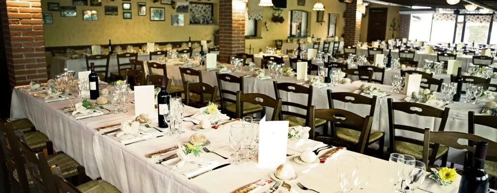

Feste e cerimonie
Festeggiare in cascina
Menù della tradizione, l'oasi con gli animali e un mini club con animatori: i grandi stanno a tavola tranquilli, i bambini si divertono.

Battesimi, comunioni, cresime, anniversari
Cerimonie 2027
Quota tutto incluso
- Adulti
- 60 €
- Bambini 3–10 anni
- 38 €
- Bambini 0–2 anni
- alla carta
- Acqua, vino bianco e rosso della casa, Prosecco o Moscato per il brindisi, caffè
- Ingresso all'oasi per tutti gli invitati
- Aree giochi esterne recintate
- Animatori nel mini club dalle 13:30 alle 16:30
Caparra confirmatoria del 30% per bloccare la data. Numero definitivo degli ospiti entro 7 giorni dall'evento. Per gruppi di almeno 12 adulti il menù si può avere anche nei giorni feriali.
Matrimoni
Il giorno più bello, in un'oasi naturale
Un parco immerso nel verde che ospita decine di specie animali: una location originale, a contatto con la natura.
- Allestimenti e menù a tema, personalizzabili in ogni dettaglio
- Materie prime della nostra azienda agricola
- Torte nuziali dei nostri cake designer, moderne o della tradizione
- Mini club e animazione per i bambini durante il ricevimento
- Possibilità di riservare l'intera cascina
Menù da 75 € a persona
Da aprile a ottobre · giovedì–domenica · 15:30–18:30
Compleanni dei bambini
Un pomeriggio all'aria aperta, nelle nostre aree esterne, con gli animali a due passi.
- Ingresso all'oasi, area giochi con calcetto e ping-pong
- Buffet: pizza margherita e focacce, taglieri di salumi e formaggi, panini al latte farciti, patatine e popcorn
- Gelato artigianale, dolce o torta di compleanno
- Acqua e succhi; per gli adulti una bibita, una birra o un calice di vino
Pacchetto tutto incluso
- A persona (minimo 25 invitati)
- 25 €
- Bambini fino a 3 anni
- nostri ospiti
Su richiesta: torta a tema +5 € a persona, allestimento con festoni e arco di palloncini 90 €, animatrici 20 € l'ora (minimo 2 ore), laboratori creativi 10 € a bambino.
Caparra di 10 € a partecipante. Con il maltempo la festa non si annulla: si sposta a un'altra data.
Le feste d'inverno
Natale e Capodanno in cascina
Pranzo di Natale 75 €
Tris di antipasti, ravioli di stufato alla pavese e risotto Carnaroli con zucca, zola e nocciole, reale di vitello al Pinot Nero, crema al mascarpone con panettone. Vini DOC dell'Oltrepò, acqua, caffè e digestivo inclusi.
Bambini 3–12 anni 35 € con area giochi, truccabimbi e baby dance. Caparra di 25 € a persona entro il 5 dicembre.
Cena di San Silvestro 75 €
Una serata di tradizione e buona cucina, senza musica e frastuono: antipasto del fattore, risotto al Castelmagno e agnolotti del plin al cinghiale, filetto in crosta, cotechino con lenticchie a mezzanotte. Bevande e spumante inclusi.
Bambini fino a 10 anni 35 € con animazione nel mini club per tutta la serata. Prenotazione obbligatoria.